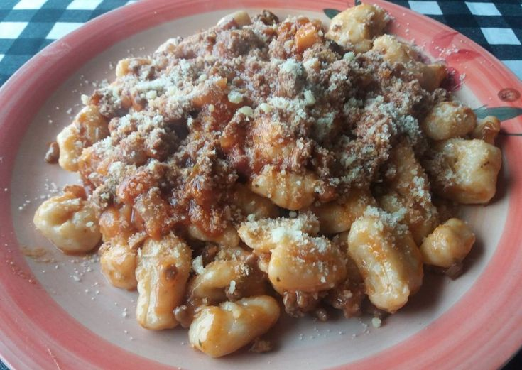
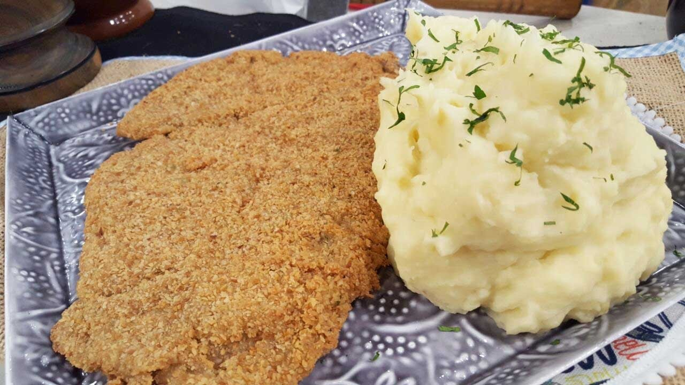

Ñoquis de papa

Preparación
- Hervir las papas enteras y con cáscara en abundante agua con sal.
- Una vez blandas, colar las papas y pelarlas en caliente, con ayuda de un paño y un tenedor. Es importante hervirlas con cáscara para que no absorban líquido de más.
- Pisar las papas en un bowl y dejar entibiar.
- Agregar el huevo y condimentar con sal, nuez moscada y pimienta blanca.
- Añadir la harina e integrar bien al puré, sin amasar para evitar que queden gomosos.
- Colocar la masa sobre la mesada enharinada, formar tiras de 2 a 3 cm de diámetro y cortar los ñoquis. Darles forma con una ñoquera o un tenedor.
- Cocinarlos en agua hirviendo con sal y retirarlos cuando suban a la superficie (1-2 minutos).
- Servir con salsa de tomate casera.
- También se pueden acompañar con estofado, crema de leche y queso rallado.
Milanesa con pure

Preparación
- Preparar dos fuentes. En una de ellas, batir el huevo con dos cucharadas de agua, 1 cdita de vinagre de alcohol, Provenzal Alicante, mostaza y una pizca de sal y en la otra, mezclar el pan rallado con el Mix crocante para Carne Alicante.
- Condimentar los bifes con el Condimento para Milanesas y Supremas Alicante y pasar primero por el bowl con huevo, cuidando de cubrir toda la superficie y luego, con la ayuda de un tenedor pasar al otro bowl con pan rallado, cubrir bien con el pan, presionando con la punta de los dedos o con la parte de atrás del mismo tenedor.
- Reservar las milanesas tapadas.
- Repetir la operación con el resto de los bifes.
- Reservar en heladera por 30 minutos.
- Mientras, preparar el puré: pelar las papas y hervir, a partir de agua fría con sal, hasta que estén muy blandas. Es muy importante colocar las papas enteras, sin cortar, para tener un puré mucho más cremoso y menos aguado.
- Colar y pisar con pisapapas mientras las papas están calientes.
- Condimentar con Nuez Moscada entera/molida Alicante, revolver y añadir la manteca e incorporar hasta que se derrita por completo.
- Luego ir vertiendo de a poco la leche tibia hasta conseguir la consistencia deseada.
- Reservar el puré cubierto con un paño para que no pierda temperatura.
- Calentar en una sartén aceite para freír y cuando esté bien caliente ir cocinando las milanesas, de a pocas a la vez para que no se enfríe de golpe el aceite y queden bien crocantes
- Servir las milanesas con el puré.